また今年も 11/11 のアリエク祭りでポチってしまいました。
昨年の11/11は、何を買うか迷っているうちに結局、まぁいいかという感じで祭りに圧倒されて結局、値引きとは関係ないオレンジパイをポチッたんわけですが、今年はちゃんと買うものを下調べしておました。
ずっと欲しかったのは、アンドロイドウォッチです。中国製のスマートウォッチはデザインがいまいちなのが多くて、ベルトをカスタムするのを前提にいろいろ迷ったあげく、以下のをぽちりました。LEMFO LEM5 Smart Watch
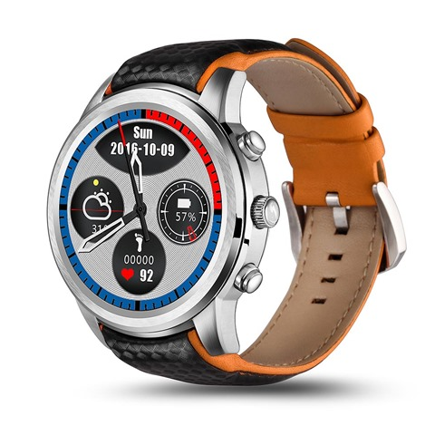
リリースされたのは最近で、11,915円でゲットしました。11/11が過ぎた今でも、￥12,868 で買えるようですから、たぶん、少し待てば1万以下になるとは思います。黒とステンレスのものがあり、ポチッたのはステンレスのタイプです。ベルトがどう見てもダサいと思うのは自分だけでしょうか？
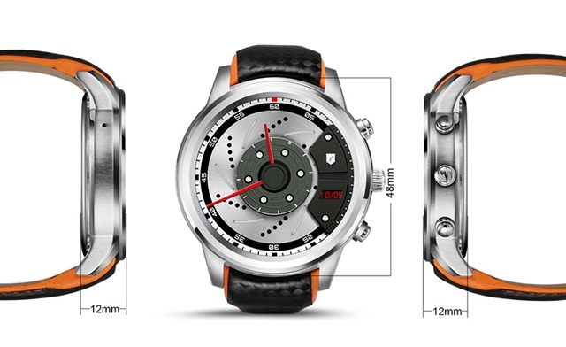
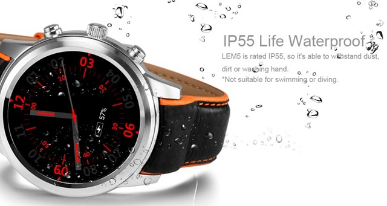
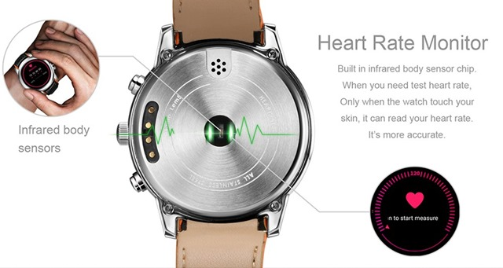
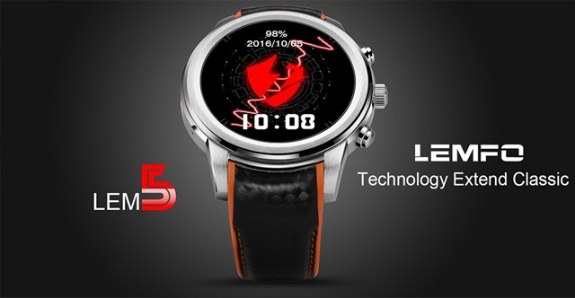
手元にきて、ベルトの交換サイズがわかったら何かかっこいいステンレスのベルトに買い換えようかと思っています。ポチッた要素は、400×400 の ディスプレイとメモリが RAM1G,ROM8G で裏蓋もステンレス、ベルト交換でき、アンドロイド5.1 というところでしょうか？
オフィシャルサイトは、こちら。
ちょっと前までは、FINOW X5（良くわかる参考サイト）にしようかと思っていたんですが、11/11直前でリリースされたこちらに軍配があがりました。
一昨年は、アンドロイドウォッチじゃないのを8000円くらいで買うか踏みとどまりましたが、まぁ1年待った甲斐があったようです。ちなみに、アップルウォッチが11,111円で買えなかったという反動もあります。
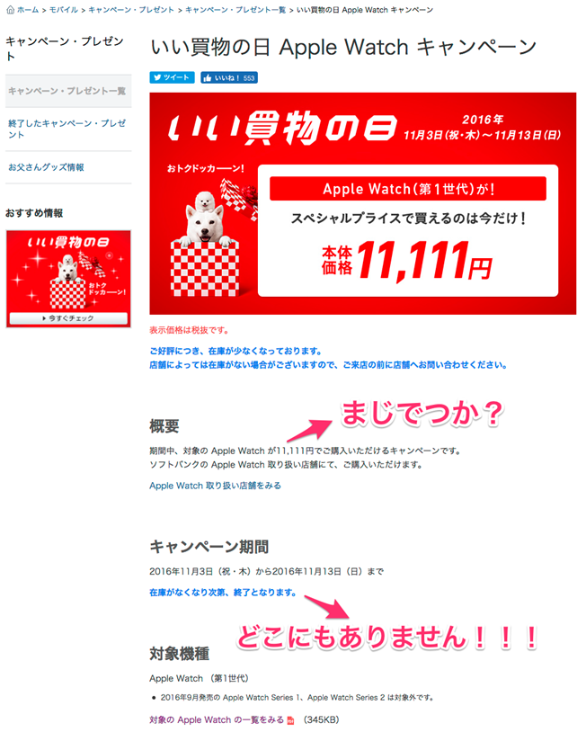
ほんと、どこにもありません。気がつくのがもう少し速ければゲットできたのかもしれませんが。まぁ、携帯もアンドロイドだし、親和性もあるからいいかということで。
あと今回のメインは実はこっち。
通勤用に使っている電動自転車を2台にすべく、1台分のパーツをゲット。今度のは、mid drive です。8FUN 48v750w mid drive motor BBS-02B というのが製品名称かな。
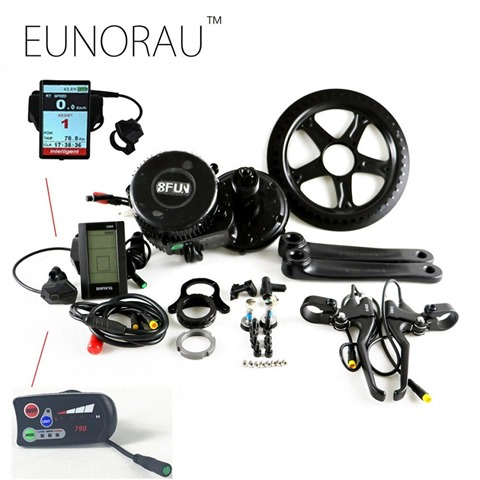
MID Drive は、モーターがクランク部分に来るタイプのもので、タイヤを交換しやすく、かつこぎ心地が自然というらしい代物です。コントロールするユニットは、850C/DPC14というタイプの3.2 inch IPS ディスプレイのものです。仕様書によれば、IP65 (water proof)相当の防水のようです。この動画見てて、起動時にパスワードが出るので、メインスイッチの鍵タイプのキースイッチはいらないやと思い、それはキャンセル。こういう、鍵でメインスイッチになりアクセルスロットと電圧系が一体式になっているものです。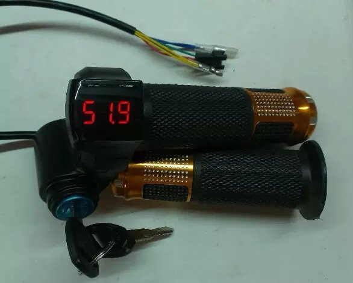
パスワードを解くのが面倒だったらどっかにメインスイッチを付けるかもですが。
[youtube https://www.youtube.com/watch?v=XJD-kniFgnI]
このユニットは、アドバンスモードで、スピードリミットやアシストレベルも設定できるようです。
あとの買い物は、電動自転車を作るパーツをあれこれとゲット。
これは、油圧式のブレーキのセンサー。ノーマル部品には機械式のワイヤーのブレーキセンサーがあります。油圧式には使えないので。
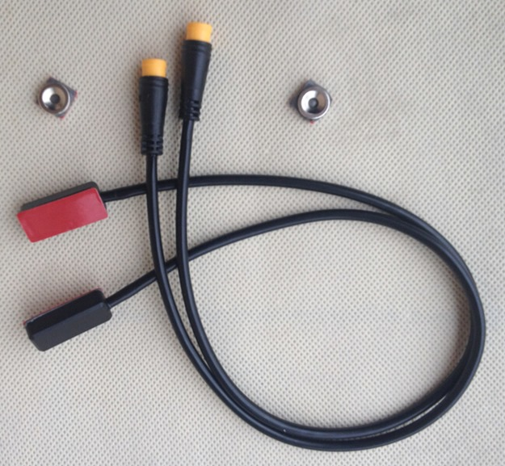
磁気センサーを油圧の稼動部分につける感じに取り付け。磁気センサーです。磁石は両面テープのようです。
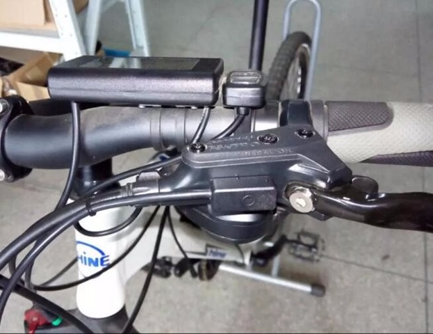
これは、ずっと探していた油圧ブレーキにしたときのホースをつけるパーツ。やっと見つけました。
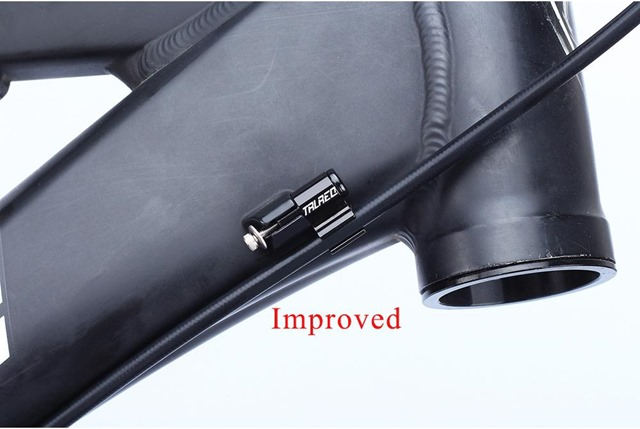 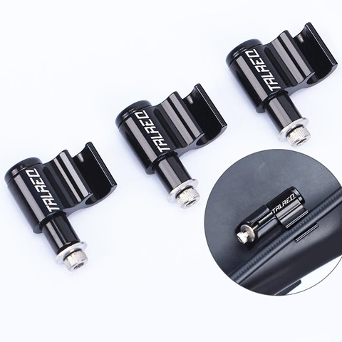
他、53T のフロントスプロケットと、MID Drive に付けるパーツ。ノーマルパーツだと46T なのでトップスピードを上げるために交換。チェーンガードと一体式なので、かっこいいかと。4結タイプとこの5結タイプがあります。５結をセレクト。58T というのもありますが、とりあえず53T で。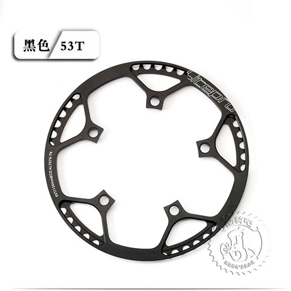 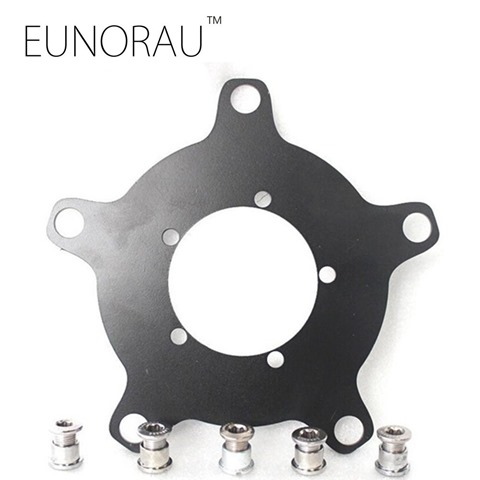
それから、ずっと探していたゴールドタイプのリヤスプロケット9速（¥ 2,566）。このゴールドのスプロケットは普通に買うと高くて、なかなか手が出せなかったもの。それと、ハブがゴールドの26インチ交換用前後ホイール（¥ 6,157）。どちらもは送料込みです。ホイールは人気があったよで、売り切れたようです。まぁ、どんなハブが使われているかはわかりません。
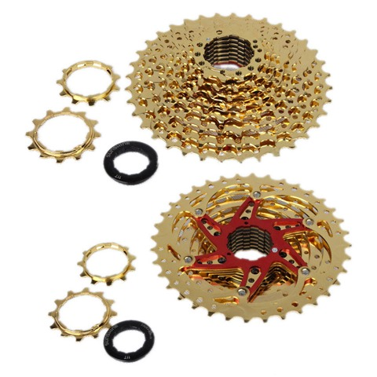 このスプロケットはばらばらになる高級品タイプのようです。
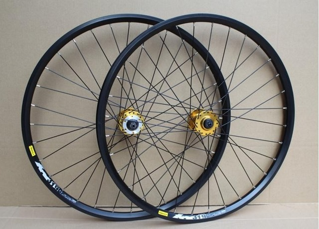
クイックリリース（¥ 741）も忘れずにゲット。ゴールド＋黒がこのマシンのカラーです。
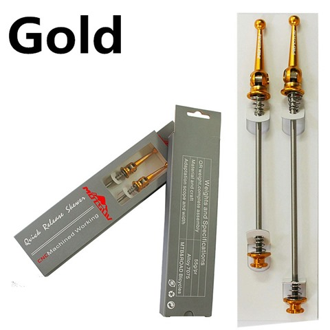 まだ続きます。ディレーラーハンガー（¥ 177）。アマゾンで買うと、980円するのよね。構造的に折れやすいみたいで、忘れたころに折れるので予備に買っておきました。15年の間に2回折れています。フレームは長年使っているわけです。いつか、フレームはカーボンにしてみたいところ。高すぎて手が出ません。
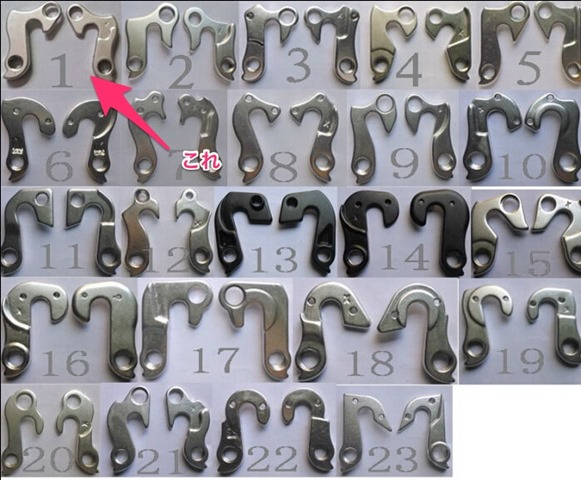
どんどん、ポチります。
今も付けているんですが、超明るいLEDライト、電池付き（¥ 1,782）。冬場は日がすぐに暮れますので、点滅して走っています。5000ルーメンの明るさがあるようで、ほんとにかなり明るいです。このくらい明るくても、歩道に自動車が突っ込んできたり、横断歩道で轢かれそうになりますので、必需品。1時間から2時間くらいのライドで電池は切れます。行きは明るいので、帰りだけならこれでOKです。
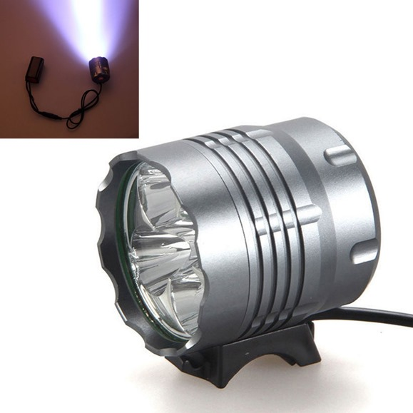
次は、サドル（¥ 2,386）です。かっこいいのは、おしりが痛いし、ママチャリみたいな大きいのはかっこ悪いので、その妥協できる中でもセレクトです。今も同じものを使っていますが、1時間くらいのライドなら、たちこぎも含めてなんとか痛くならない感じです。通勤時にサイクルパンツなんてはけませんからね。更衣室があるなら別ですが。欠点は雨に濡れると、しっとりすること。
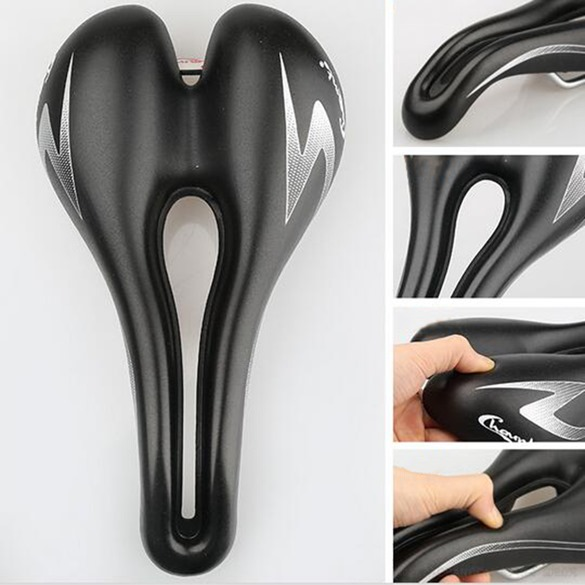
残るは、メインバッテリーです。48V電源の20AH くらいを買うと4万はするので、10AH のを自作することに。ここはかなり迷いましたが、結局、10000mah の板タイプのリチウム電池を14枚（14s）使って、定格出力51.8V （フル充電最大：58.8V）の電源を今回は作ります。
往復25km 片道12.5km の道のりで、今は250w のモータに、8ah の 24V 電源でなんとか往復できています。750w のモータといっても、全開出力するわけではありませんから、10ah くらいでいけるんじゃないのという感じです。足りなければ、重量と相談でもう少しバッテリーを大きくするつもりで、最初は少し小さめに作りました。
バッテリー自作派は2つの方向があり、 18650 タイプのリチウム電池を使う派と、タブレットの中に入っているような板タイプのリチウム電池を使う派とあります。18650 タイプだと、51.8V を作るのには 最低14本 必要ですが1本は2000mah から 2500mah くらいなので4本を並列にする必要があります。すると、14本 x 4並列で56本の18650 タイプが必要です。値段は、1本200円だと11200円、300円だと16800円となります。重量や配線の観点から板タイプのシングルセルに軍配があがり、充電管理の面からも4本1セットとしないシングルセルのほうが電池にやさしいです。ということから、なるべく安くて、容量が大きくてバランスのとれたリチウムポリマーバッテリーを探しました。あと、LiFePO4（3.3V:MAX3.7V）を16S使うのは重量の面からやめました。アリエクだとこういうもの。
アリエクから板タイプのリポを探すときは、厚み x 横 x 縦 のサイズで探します。検索は難航しましたが、なんとか1065113というタイプの 10000mha のが良さそうとわかりました。他、9068135P 15000mahというのも迷いました。あと5年もすれば、電池はたぶんかなり進化すると思うので、今必要なのを最低限使うのがいいかなと。
BMSは14S のを取り付けますので、保護回路はいりません。以下のようなシングルセルをゲット。¥ 2,372 x 7 = ¥ 16,598
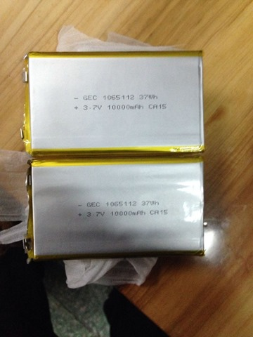 バッテリー専門店で、本当にリアル容量が10000mah ということのようですが、さてどうなることやら。これに BMS を付けます。
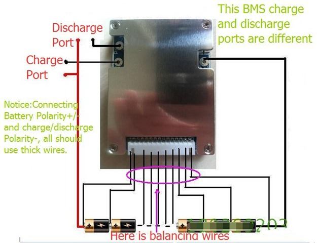
あとは、このバッテリーを入れるバック（¥ 934）です。黒色のものをセレクト。このバックは今も使っていて、なかなかしっかりしているのと手ごろな安さのバランスがいい感じ。プラスチックケースや、アルミのボトルタイプもありますが、いずれもボトルホルダーのネジに固定するので不安定で振動がハードな乗り方をすると、最悪外れます。実際外れた経験があるので。
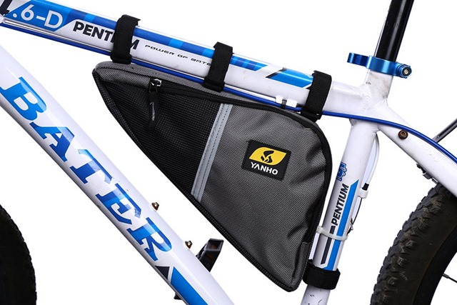
他、充電器や、小物を少々。
面白いものとしては、効果があるかどうかはわかりませんが、タイヤとチューブの間に入れるパンク防止のフィルムです。
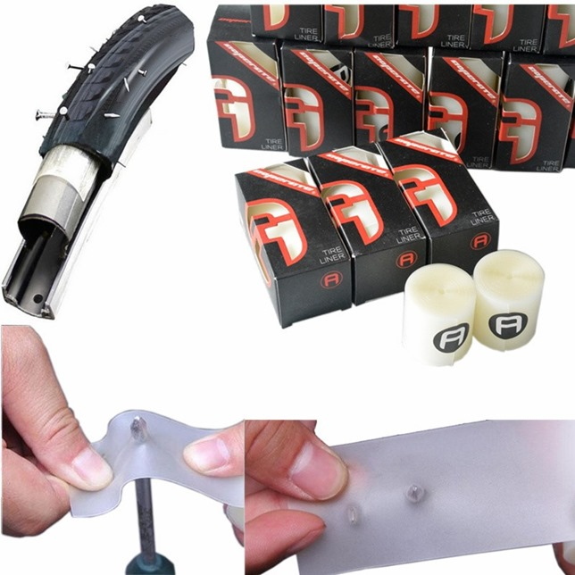
どのくらい効果があるかはわかりませんが、MICHELIN(ミシュラン) WILD RUNNER BLK 26X1.4 のスリックタイヤがよくパンクしてたので、ちょっと試すことに。1年に5回はパンクしていたので、効果があればわかるはず。700c 用の 25mm 幅のと 26インチの 40mm 幅のをゲット。（¥ 656 x 2セット）
ディレーラーは日本でshimano のを amazon で買ったほうが安いので、9速用のシフトレバーと、リアディレーラーは以下を。これでグリップシフトからさようならです。ずっと替えたかったのですが、なかなか機会がなく、リアディレーラーは昨年、ハンガーが折れたときにリアホイールに巻き込まれ大破。グリップシフトだけ使っていました。15年間ありがとう。自転車って最後まで使えるのは、結局フレームとシートポストと、ハンドルくらいのもの。後は、だいたい壊れるか交換したくなる。
SHIMANO ALTUS RD-M370
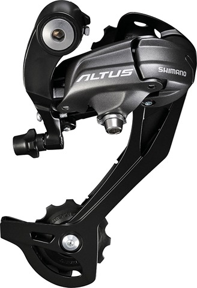
SHIMANO ESLM370RAL BK シフトレバー右
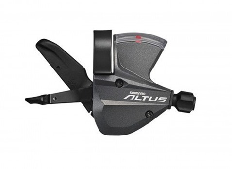
グリップは、以下のをつけることに。スポンジタイプのやつです。
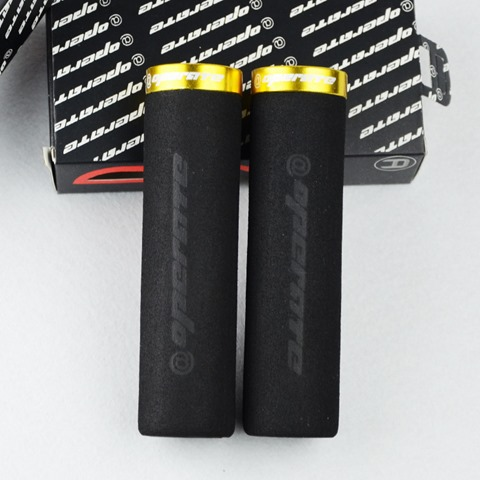
あとは、 ペダルやら、半田やら、ディスクパッドの交換部品などなど小物を購入。年末には取り付け作業して新年度から乗り始めですかね。
これで2台、移動手段が出来るのでその日の気分で乗れます。ということで、1台にはカゴを付けることにしました。
MTB に合う前カゴなんてあるのかなと思いましたが、以下のようなのを一回付けてみることに。
DOPPELGANGER バイクシェルパ（￥ 2,709 ）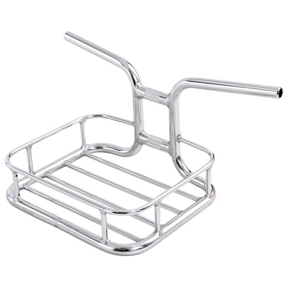
黒がよかったのですが、5400円したので、銀色に。まぁ、塗装するか、底に板張りでもしてカスタムしてみることにします。冬はいいんですが、夏はリュックやメッセンジャーバックをカゴに入れたくなりますからね。暑いんですよね。
実際にとりつけるとやっぱりかっこ悪いですかね？まぁ、実用性とかっこよさを両立するのは難しいんです。
ミッドドライブの 750W モーターは、YouTube によれば、50km/h 以上出るようです。まじですか？ロードレーサータイプだと８０Km/h以上だしている映像もあります。油圧DISK ブレーキ必須ですね。
[youtube https://www.youtube.com/watch?v=rs3MwYfEvro][youtube https://www.youtube.com/watch?v=5NQAZSzJdrc]
自転車は下り坂では、56km/h くらいは自重で出ますが、平地での50Km/h は相当脚力がないと無理ですから気持ち良さそう。がんばれば、MTB でも人力で出ますが。まぁ、リミッター24km/h でも十分気持ちいいし、冬は寒いのでゆっくり走るのがいいですね。自転車は、20-30km/h でヘルメットをかぶらずに風を感じる最高の乗り物だと思います。ガス代もかからないし、エコですし、駐車禁止の違反もまずとられないし。有料駐車エリアでも100円ですし。
さて、また交通費を1年間ためて、来年の11/11 に何か買いますか。来年はいよいよ、カーボンかチタンフレームになるかも。
あるいは、MID Drive の極小モータを入手してパット見電動じゃなさそうなのを作るか。これ作ったら日本でもめちゃくちゃ売れると思うんですが。既存のBB に入れるモータは少し小さいので、どのくらいのトルクが出るのか。部品はアリエクにあります。
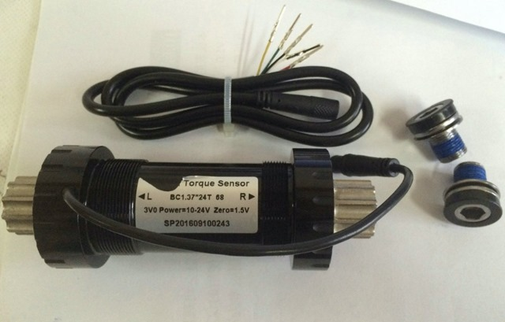
電池を入れるフレームは自作しないとだめかもですが。となると、アルミ溶接ですか。
うーん、はまりそう。